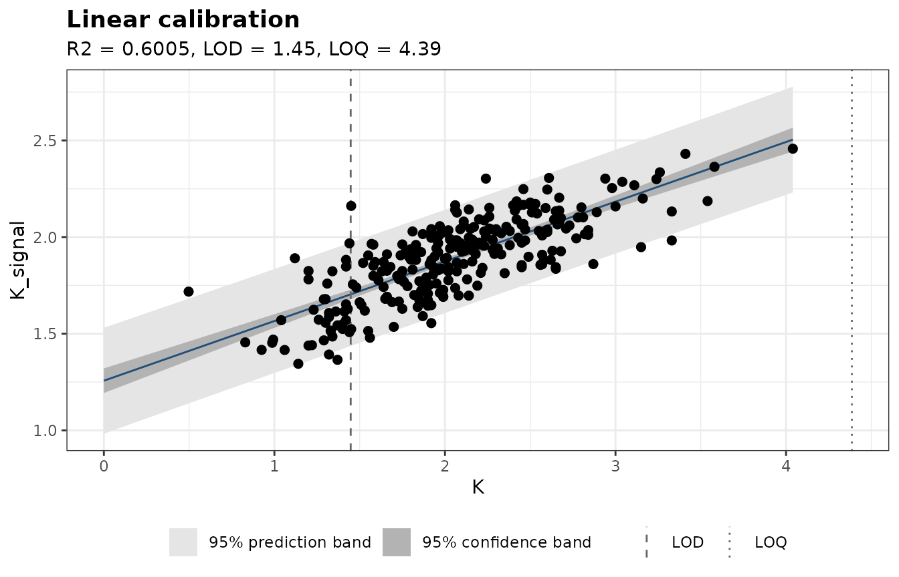
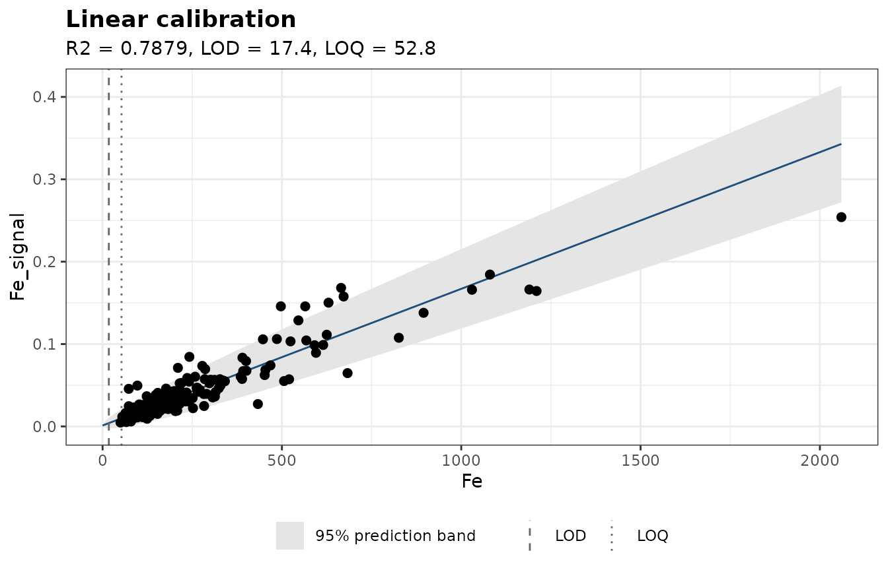
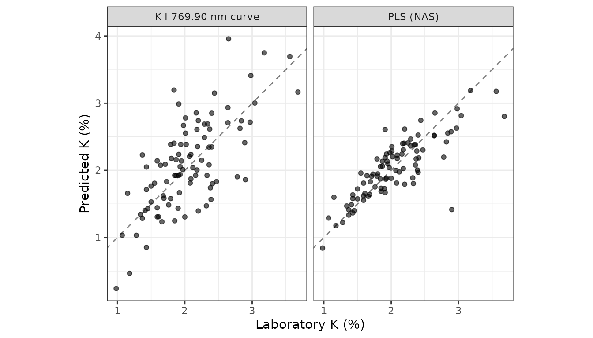

A calibration relates a signal to the concentration of an element, from samples of known composition, and predicts the concentration of new samples. This vignette builds univariate calibration curves from line intensities, with their limits of detection and quantification, and compares them with a multivariate model of the whole spectrum, whose figures of merit come from the net analyte signal.
library(specProc)
library(dplyr)
library(tidyr)
library(ggplot2)
data("forageLIBS")
spectra_id <- forageLIBS |> select(1:2) |> names()
minerals <- forageLIBS |> select(3:14) |> names()
spectra <- forageLIBS |> select(-all_of(c(spectra_id, minerals)))Line intensities
We remove the baseline and measure, in every spectrum, the
intensities of a potassium line, an iron line and the carbon line C I
247.86 nm. Carbon is the main element of the forage matrix, and dividing
by its line compensates for the changes of ablated mass and plasma from
spectrum to spectrum (the internal standard of
vignette("preprocessing")):
corrected <- baseline_arpls(spectra, lambda = 1e5, max.iter = 20)$correction
lines <- c(C = 247.856, K = 769.896, Fe = 259.940)
intensities <- line_intensities(corrected, lines) |>
select(spectrum, line, intensity) |>
pivot_wider(names_from = line, values_from = intensity)
data <- forageLIBS |>
select(all_of(spectra_id), K, Fe) |>
mutate(K_signal = intensities$K / intensities$C,
Fe_signal = intensities$Fe / intensities$C)We set aside a quarter of the samples to test the calibrations:
A calibration curve for potassium
calibration_curve() fits the signal as a function of the
concentration, and returns the coefficients, the figures of merit and
tests of linearity:
k_curve <- calibration_curve(calibration, K_signal, K)
k_curve
#> Linear calibration curve (275 standards)
#>
#> term estimate std_error lower upper
#> intercept 1.2570 0.03232 1.1934 1.3206
#> slope 0.3087 0.01524 0.2787 0.3387
#>
#> R-squared: 0.60055
#> Sensitivity: 0.3087
#> LOD: 1.45 (residual)
#> LOQ: 4.39
#> Mandel: F = 4.52, p = 0.0345
#> Lack of fit: F = 1.12, p = 0.258- The sensitivity is the slope: the change of the signal for 1% of K.
- The limits of detection and quantification, 3.3\,\sigma/S and 10\,\sigma/S, use here the residual standard deviation \sigma of the fit. It includes every source of scatter around the curve, not only the noise of a blank, so the limits, 1.4% and 4.4% K, describe this calibration rather than the instrument.
- Mandel’s test compares the straight line with a quadratic curve. Its p-value, 0.034, points to a slight curvature, as expected for a resonance line, which the plasma partly reabsorbs at high concentration.
plot_calibration() draws the curve with its confidence
band (where the mean signal lies) and its prediction band (where a
single new measurement is expected):
plot_calibration(k_curve)
predict() inverts the curve: it gives the concentration
of new samples from their signals, with a prediction interval, and flags
the values below the limits of detection and quantification:
k_predicted <- predict(k_curve, test$K_signal)
head(k_predicted)
#> # A tibble: 6 × 7
#> signal concentration se lower upper below_lod below_loq
#> <dbl> <dbl> <dbl> <dbl> <dbl> <lgl> <lgl>
#> 1 2.23 3.17 0.443 2.29 4.04 FALSE TRUE
#> 2 1.89 2.05 0.439 1.18 2.91 FALSE TRUE
#> 3 2.06 2.61 0.440 1.74 3.48 FALSE TRUE
#> 4 2.16 2.93 0.442 2.06 3.80 FALSE TRUE
#> 5 1.83 1.86 0.439 0.996 2.73 FALSE TRUE
#> 6 1.85 1.92 0.439 1.06 2.79 FALSE TRUE
sqrt(mean((k_predicted$concentration - test$K)^2)) # RMSEP, % K
#> [1] 0.4828623The limit of quantification of this curve, 4.4% K, is above the
potassium content of almost every sample, so 100% of the predictions are
flagged below_loq: a single line ranks the samples, but
does not quantify them individually with the usual 10\,\sigma margin.
Trace elements: weights and limits of detection
Iron ranges from 50 to 2060 ppm, and its signal is noisier at high
concentration. An unweighted fit is then dominated by the few rich
samples, and so is its residual standard deviation, which inflates the
limit of detection. Weights "1/x" give each sample a weight
inversely proportional to its concentration. With weights, the residual
standard deviation depends on their scale, so the blank standard
deviation is taken from the standard error of the intercept
(lod_method = "intercept"):
fe_calibration <- filter(calibration, !is.na(Fe))
fe_unweighted <- calibration_curve(fe_calibration, Fe_signal, Fe)
fe_weighted <- calibration_curve(fe_calibration, Fe_signal, Fe, weights = "1/x",
lod_method = "intercept")
bind_rows(unweighted = fe_unweighted$figures_of_merit,
weighted = fe_weighted$figures_of_merit, .id = "fit") |>
select(fit, n, r_squared, lod, loq)
#> # A tibble: 2 × 5
#> fit n r_squared lod loq
#> <chr> <int> <dbl> <dbl> <dbl>
#> 1 unweighted 272 0.852 295. 895.
#> 2 weighted 272 0.788 17.4 52.8
plot_calibration(fe_weighted, interval = "prediction")
The weighted fit gives a limit of detection of 17 ppm, instead of 295 ppm. Its R² is lower, because it no longer favors the rich samples, which dominate R².
A multivariate model and its figures of merit
A single line uses a small part of the spectrum. Partial least squares (PLS) regression uses all of it: we divide the baseline-corrected spectra by the carbon line, and choose the number of components by cross-validation on the calibration samples, with the pls package:
x <- as.matrix(corrected) / intensities$C
is_calibration <- !data$Sample %in% test_samples
x_calibration <- x[is_calibration, ]
cv <- pls::plsr(K ~ x, data = data.frame(K = data$K[is_calibration], x = I(x_calibration)),
ncomp = 15, validation = "CV", segments = 10)
ncomp <- pls::selectNcomp(cv, method = "onesigma")
ncomp
#> [1] 7nas() fits the same model and computes its net analyte
signal (NAS): the part of each spectrum that is unique to potassium,
orthogonal to the contributions of the other constituents. The figures
of merit follow from it:
- Sensitivity: the NAS produced by 1% of K.
- Selectivity: the fraction of each spectrum used for prediction.
-
Limits of detection and quantification, 3.3\,\sigma_x/\mathrm{SEN} and 10\,\sigma_x/\mathrm{SEN}, where \sigma_x is the noise of the spectra
(
noise).
We estimate the noise from the three samples measured twice, as the standard deviation of their difference spectra divided by \sqrt{2}:
repeated <- data$Sample[duplicated(data$Sample)]
differences <- sapply(repeated, \(s) {
rows <- which(data$Sample == s)
x[rows[1], ] - x[rows[2], ]
})
noise <- sd(differences) / sqrt(2)
k_nas <- nas(x_calibration, data$K[is_calibration], ncomp = ncomp, noise = noise)
k_nas$figures_of_merit
#> sensitivity selectivity analytical_sensitivity
#> 4.0183608 0.1183193 29.9163896
#> lod loq
#> 0.1103074 0.3342649
nas_predicted <- predict(k_nas, x[!is_calibration, ])
sqrt(mean((nas_predicted$predicted - test$K)^2)) # RMSEP, % K
#> [1] 0.2964224
summary(nas_predicted$selectivity)
#> Min. 1st Qu. Median Mean 3rd Qu. Max.
#> 0.0009985 0.0479909 0.0875087 0.1082689 0.1542453 0.3520663
bind_rows(
`K I 769.90 nm curve` = tibble(laboratory = test$K, predicted = k_predicted$concentration),
`PLS (NAS)` = tibble(laboratory = test$K, predicted = nas_predicted$predicted),
.id = "model"
) |>
ggplot(aes(laboratory, predicted)) +
geom_abline(colour = "grey50", linetype = "dashed") +
geom_point(alpha = 0.6) +
facet_wrap(~ model) +
coord_equal() +
labs(x = "Laboratory K (%)", y = "Predicted K (%)") +
theme_bw()
The PLS model predicts the test samples with an error of 0.30% K, against 0.48% for the calibration curve. Its limit of detection, 0.11% K, accounts for the noise of the spectra only, so it is a lower bound, far below the limit of the calibration curve, which includes all the scatter of the samples. Its mean selectivity, 0.12, means that only about a tenth of each spectrum is specific to potassium: the rest is shared with the other constituents and the plasma.
Summary
- Normalize line intensities to an internal standard, such as the carbon line of an organic matrix.
-
Check the linearity with Mandel’s test and the
lack-of-fit test of
calibration_curve(); resonance lines often curve at high concentration. - Weight the fit when the signal is noisier at high concentration, and take the limit of detection from the intercept or from blanks.
-
Report how the limits were estimated: from the
residuals of a curve, they include the scatter of the samples; from the
noise of the spectra (
nas()), they are lower bounds. - Validate on samples left out of the calibration: the prediction error on test samples is the most honest figure of merit.
The last vignette, vignette("plasma-diagnostics"),
measures the plasma itself: electron density, temperature and
self-absorption.